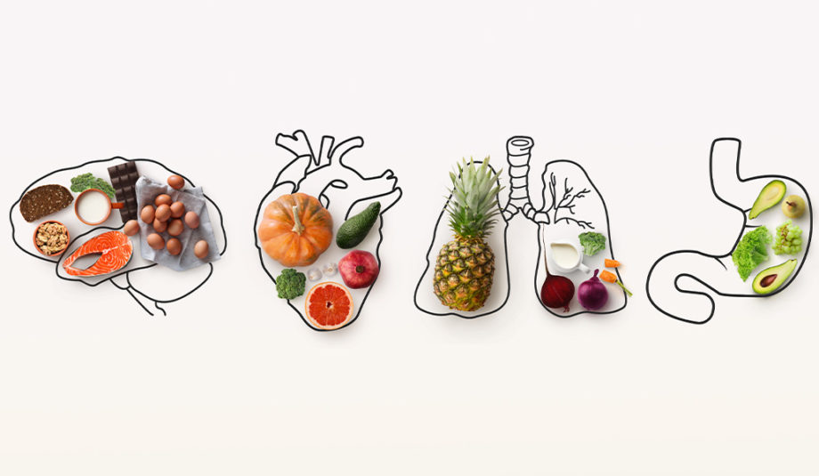
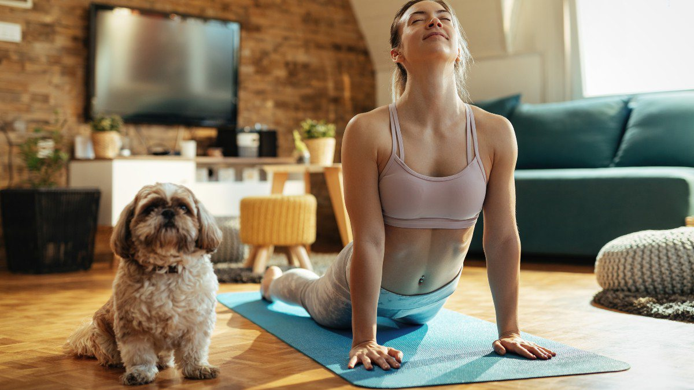

Artigo 1: Importância da Alimentação Saudável

O cálcio já é um velho conhecido no que diz respeito à saúde óssea.
Encontrado em produtos lácteos variados (como leite, iogurtes e queijos),
no brócolis e em folhas de cor verde-escura, o consumo adequado de cálcio é
essencial para retardar ou até mesmo evitar a osteoporose, uma patologia que
deixa os ossos frágeis e porosos.
Artigo 2: Exercícios para Manter-se Ativo

Quando as pessoas vão para a academia, é normal que elas
se preocupem com as roupas, tênis e acessórios que vão utilizar.
Usar um look leve, que não cause nenhuma limitação de movimento,
ter um par de tênis adequado para a prática escolhida e uma
garrafinha de água para hidratação, são princípios básicos
para a realização de atividades físicas. E, em casa,
não é diferente.
Artigo 3: Dicas para um Sono Reparador

Ter dificuldade para dormir é o pesadelo de muita gente: um a cada três
brasileiros têm insônia. As preocupações com os boletos, o estresse do
trabalho e tudo aquilo que acontece durante o dia a gente leva para a cama.